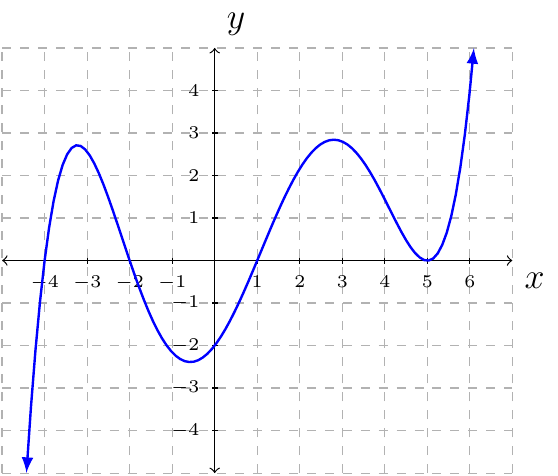

Section 3.4
Property 5
Let \(f(x)=ax^n\) where \(n\) is a positive integer and \(a\) is a nonzero real number.
If \(|a|>1\) then the graph is stretched vertically.
If \(0<|a|<1\) then the graph is shrinking vertically.
If \(a<0\) then the graph is reflected about the \(x\)-axis.
The graph of \(y=f(x)+k\) is the graph of \(f\) shifted up or down.
The graph of \(y=f(x-h)\) is the graph of \(f\) shifted left or right.
End behaviors of \(f(x)=ax^n\).
If \(n\) is odd and
\(a>0\) then
\(f(x)\to\infty\) as \(x\to \infty\).
\(f(x)\to-\infty\) as \(x\to -\infty\).
\(a<0\) then
\(f(x)\to -\infty\) as \(x\to \infty\).
\(f(x)\to \infty\) as \(x\to -\infty\).
If \(n\) is even and
\(a>0\) then
\(f(x)\to\infty\) as \(x\to \infty\).
\(f(x)\to\infty\) as \(x\to -\infty\).
\(a<0\) then
\(f(x)\to-\infty\) as \(x\to\infty\).
\(f(x)\to-\infty\) as \(x\to-\infty\).
Multiplicity of Zeros
Since \(f(x)=ax^n\). It is true \(f(0)=0\).
If \(n\) is even, then the graph of \(f\) will touch the \(x\)-axis but never cross.
If \(n\) is odd, then the graph of \(f\) will cross the \(x\)-axis.
Turning Points
A polynomial of degree \(n\) has at most \(n-1\) turning points, with at least one turning point between each pair of successive zeros.
Example 59
Show \(f(x)=x^3+x+1\) has at least one zero on the interval \([-1,0]\).
Solution:
First, scratch work. \(f(0)=1\) and \(f(-1)=(-1)^3+(-1)+1=-1\).
Now, the proof. Since \(f(x)\) is a polynomial and \(f(-1)<0<f(0)\) there exists a \(c\) in \((-1,0)\) such that \(f(c)=0\), by IVT. Therefore, \(f\) has at least one zero on the interval \([-1,0]\).
Example 60
A certain right triangle has an area \(30\) square inches. One leg of the triangle measures 1 inch less than the hypotenuse. Let \(x\) represent the length of the hypotenuse. Complete the following:
Express the length of the leg mentioned above in terms of \(x\). What are the possible values for \(x\). That is, what is the domain of \(x\).
Solution:
Draw a triangle and label the legs \(l\) and \(b\) and denote the hypotenuse \(x\). The base of the triangle will be \(b=x-1\) since: “One leg of the triangle measures 1 inch less than the hypotenuse”. The height of the triangle will be \(l\). If \(x=1\) then the length of \(b\) would be zero. If \(0<x<1\), then the length of \(b\) would be negative. Therefore, \(x\) must be strictly greater than \(1\). That is, the domain of \(x\) is \((1,\infty)\).
Find the length of the other leg.
Solution:
We have hypotenuse is \(x\) and the length of one leg is \(b=x-1\). We will use the Pythagorean Theorem to find the length of \(l\) in terms of \(x\). That is,
The length of the missing leg is \(l=\sqrt{2x-1}\).
Write and equation based on the triangle having an area of 30 square inches and the information determined thus far.
Solution:
Since the area of a triangle is \(A=\frac{1}{2}bl\), \(b=x-1\), \(l=\sqrt{2x-1}\) and \(A=30\) we have the following equation to solve.
Find the dimensions of the triangle.
Solution:
Solving \(2x^3-5x^2+4x-3601=0\) will give the dimension for the hypotenuse (and the rest of the dimension).
The list of possible rational zeros is \(\pm1\), \(\pm13\), \(\pm277\), and \(\pm3601\). Using the remainder theorem and synthetic division we have \(x=1\), \(x=-1\), and \(x=-13\) are not zeros. We then find through the remainder theorem and synthetic division that \(x=13\) is a zero. This means the hyptenuse is \(13\) inches, \(b=13-1=12\) inches, and \(l=\sqrt{2(13)-1}=5\) inches.
Example 61
Find a polynomial of the least possible degree having the graph shown.

Solution:
From the graph we see
\(x=5\) is a zero with an even multiplicity. (For the lowest degree possible we will say multiplicity 2.)
\(x=1\), \(x=-2\), and \(x=1\) is a zero with odd multiplicity. (For the lowest degree possible we will say multiplicity 1.)
\(f(0)=-2\)
By the Factoring Theorem we have \(f(x)=a(x-5)^2(x-1)(x+2)(x+4)\). We solve for \(a\) using the fact that \(f(0)=-2\).
Therefore, the polynomial of the least degree is
(or expanded \(\frac{1}{100}x^5-\frac{1}{20}x^4-\frac{23}{100}x^3+\frac{97}{100}x^2+\frac{13}{10}x-2\)).